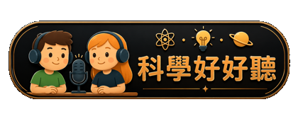

拖曳轉動視角・捲動或雙指縮放
請檢查網路連線，並使用支援 WebGL 的瀏覽器。你仍可閱讀以下星體資料。
拖曳星空轉動視角；滑鼠滾輪或雙指手勢縮放。拖動時間滑桿，就能直觀看見自轉、公轉與衛星運行變快。點擊星體名稱或底部選單，靠近觀察並閱讀知識卡；選取有衛星的行星後，卡片會列出代表性衛星。比較模式可拖曳平移。用 Tab 選取按鈕，Enter 啟動，Escape 關閉知識卡或任務；畫布取得焦點後可用方向鍵轉動、＋／－縮放、Home 回到全景。
探索模式縮短星體之間的距離；八大行星使用同一個直徑倍率，太陽另行縮小。衛星直徑相對於行星維持同一比例，但衛星軌道使用獨立的可視比例，避免與已壓縮的行星距離互相重疊。切到「真實大小比較」時，太陽與八大行星使用同一比例；衛星會暫時隱藏。比較列只比較直徑，排列間距沒有天文意義。
所有星體共用同一個模擬時鐘。高速時自轉可能太快而看不清，請把滑桿移到最左側，或按知識卡的「觀察自轉」。自轉一圈是相對遠方恆星的週期；太陽日則是從一次正午到下次正午，兩者並不總是相同。氣體行星沒有固體表面，資料採常用的代表性自轉週期。
橢圓軌道依克卜勒方程計算，含軌道傾角。初始位置為教學安排，並非即時星曆；不計算行星彼此或衛星彼此的重力擾動。太陽以日心參考系固定，採赤道約 25 天的自轉週期，不模擬緯度差異。
表面與雲層採觀測影像製成的貼圖；拼接、色彩處理與資料空白使它們無法等同每個位置、每個時刻的實景。天王星加入低對比雲帶、薄大氣光暈、暗環，以及為了辨識自轉而增強的帶狀紋理與亮雲；它們呈現已知的大氣型態，不代表即時天氣或裸眼對比。行星與衛星知識卡會註明影像性質；未被太空船完整拍攝的區域以中性顏色補齊，不製造假地形。
主小行星帶位在火星與木星之間，畫面選取約 2.1–3.3 AU 的代表區域。粒子是示意樣本，為了看清而放大；真實的小行星之間非常空曠，並非密不透風的石牆。土星環以觀測影像呈現，天王星則呈現較暗淡的環。
影像沿用各來源署名；NASA 相關影像不表示 NASA 對本教材的背書。此頁需要網路以載入 3D 程式庫與影像；載入失敗時會保留基本材質及文字資料。